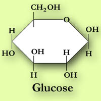

|
Carbohydrates are important to the body as sources of energy. They can be found in a wide range of plant and animal food sources. In plants they are generally end products of photosynthesis - the process in which plants convert carbon dioxide and water into simple sugars such as glucose.
|
In food carbohydrates are important for:
- Flavour - adds sweetness
- Texture - particularly starches and gums
- Preserving - jams, hams, intermediate moisture foods.
- Color - caramelization
Carbohydrates contain only the elements carbon, hydrogen and oxygen and have the general empirical formula of Cx(H20)y. They may be classified as simple or complex.
Monosaccharides are sugars containing a single ring:
- Pentoses - xylose, ribose, arabinose
- Hexoses - glucose (blood sugar), galactose, fructose(fruit sugar), mannose
| 
|
The building blocks of carbohydrates are the simple 5-carbon rings (pentoses) and 6-carbon ring (hexoses) such as glucose (C6H12O6)
|
|
|
Disaccharides are compounds that contain a bond between carbon(1) of one sugar and a hydroxyl group at any position on the other sugar:
- lactose (milk sugar), maltose, sucrose (common sugar)
|
|
Sucrose (C12H22O11) is formed in dehydration reaction from one molecule of glucose and one molecule of fructose. It is a natural sugar found in our sugar bowls and the most common sweetener. It is extracted from commercial crops such as sugar cane (tropical) and sugar beets (temperate).
|
These compounds are rapidly utilized by the body. Sucrose, fructose and lactose are used slightly more slowly because the body has to convert these compounds to glucose before they can be used.
are made up of two or more simple sugars linked together:
- dextrin, gum, glycogen, pectin, starch.
Starch is one of the most common complex carbohydrates, the energy storage compound in plants, and is easily digested by humans and animals. It is the primary storage form of glucose in plants and is contained in high amounts in potatoes, corn and tropical roots such as cassava.
Starches are formed as linked chains of glucose units. Starches such as amylose (an important plant starch) are single chains while others such as amylopectin are branched chains.
Complex carbohydrates also includes a group of compounds that are made up of chains of sugars that stabilized by cross-linking the chains. These compounds often form the structural components of plant cells and are fibrous in nature.
Fibres resist rapid digestion in the intestinal tract of humans but are readily used by ruminant animals.
Examples of different fibres are:
- Cellulose: Cellulose (wood fibre) is the primary component of plant cell walls.
- Hemicellulose: The main component of cereal fibre. Hemicellulose is common in fruits and vegetables.
- Soluble fibres: Soluble fibre includes gums, mucilages and most pectins. Higher concentrations of soluble fibres are found in fruits, oats, barley and legumes. Soluble fibres are very good for health. They generally slow the emptying of the stomach, slow glucose absorption and aid in lowering blood cholesterol.
- Insoluble fibres: Insoluble fibres include cellulose, most hemicelluloses and lignin. Insoluble fibres are high in vegetables, wheat and cereals. Insoluble fibres increase fecal weight, slow starch breakdown and delay glucose absorption into the blood.
- Dietary fibre: Dietary fibre refers to the total amount of naturally occurring materials in foods, mostly plants, that is not digested. Dietary fibre is the non digestible form of carbohydrate that is of nutritional importance in gastrointestinal disease.
Unlike fat, carbohydrates are not stored for any length of time in the body. Glycogen, the animal equivalent of plant starch, contained in the liver,is the main storage form of carbohydrate (glucose). About 30% (approximately 100 grams) of glycogen is stored in the liver and the remainder (200-300 grams) in muscle tissue.
Carbohydrates derive from both plant and animal sources. But plants are the ultimate producers of carbohydrates.Utilizing the process of photosynthesis, they first synthesize simple sugars from water and carbon dioxide using sunlight as the energy source. Next they then further combine the sugars into complex carbohydrates. Starch is used for future energy needs and cellulose and hemicellulose for cell wall structures.
|
- Glucose is the primary energy source for the brain and nerves.
Proteins may be converted into glucose (i.e. energy), but inefficiently. The use of protein for energy wastes this valuable resource which can be used for muscle building and growth..
- Rapidly digested carbohydrates can cause a major increase in insulin. Insulin is designed to remove glucose from the blood for storage. The disease Diabetes mellitus occurs in humans who can not produce enough insulin to remove the excess glucose. The glucose is then excreted. A test for Diabetes looks for glucose in the urine.
- After glycogen storage is filled, excess carbohydrate is stored as fat.
- Slowly digested carbohydrates can decrease the chance of excessive fat storage. There are claims that dietary fibre reduces colon cancer.
- Too much sucrose and lack of dental hygiene usually results in dental decay.
- Some humans lack the enzyme lactase which digests lactose, the sugar in milk. The lactose then passes from the stomach to the gut where bacteria use the sugar and produce gas resulting in painful stomach cramps.
|